AI기술6
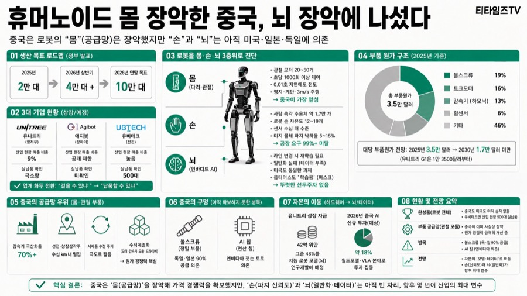
휴머노이드 몸 장악한 중국, 뇌 장악에 나섰다
- 중국은 로봇 몸(공급망) 장악했지만 손과 뇌는 미국일본독일에 여전히 의존
- 생산목표 2026년 상반기 4만대 초과, 연말 10만대지만 실제 산업납품은 유비테크 500대뿐
- 부품원가 2025년 3.5만달러에서 2030년 1.7만달러 미만 전망, 유니트리는 1.35만달러부터 판매
- 남은 병목은 볼스크류(독일일본 90% 공급)와 AI칩(엔비디아 젯슨토르 의존) 두 곳

GPU 발전은 멈췄다, AI 데이터센터는 메모리 팩토리다 — 김정호 카이스트 교수
- GPU 성능은 정체됐고 AI 지능은 메모리 용량과 속도에서 나온다는 게 김정호 교수의 핵심 진단
- 삼성전자는 GPU 위에 메모리를 쌓는 GHBM을, SK하이닉스·샌디스크·구글은 낸드 기반 HBF를 각각 공개
- 엔비디아는 삼성·SK하이닉스 의존 확대를 꺼려 HBF에 소극적, 구글·AMD·LPU 진영이 표준화 주도
- 메모리부터 전력·모델·서비스까지 풀스택을 갖추면 한국이 미중과 겨루는 3대 AI 강국 될 수 있다는 전망

AI 티 나는 웹사이트 탈출법 — Claude로 1만 달러급 디자인 만드는 4단계 시스템
- 레퍼런스 갤러리에서 유사 사이트 3개를 클로드가 직접 골라 디자인 시스템으로 이식
- Higsfield 연동한 '디자인 루프' 스킬로 캐릭터·그래픽을 골드 스탠다드 기준 반복 심사
- AI 문체 탐지로 슬롭 카피를 걸러낸 뒤 GPT-5.6으로 사람처럼 자연스럽게 인간화
- 폰트 선택도 디자인 완성도의 핵심 요소로 강조, 무료 폰트·추천 시스템까지 체계화

토큰사용 줄이면서 품질은 유지하는 4가지 방법 (표철민 AI3 대표)
- 티타임즈TV의 'AX 인사이트' 대담 코너. 표철민 AI3 대표가 진행자와 함께 기업 AI 에이전트 도입 현장에서 벌어지는 토큰…
- AX(AI 전환)가 "얼마나 많이 쓰게 할까"에서 "얼마나 가치를 창출하고 어떻게 측정할까(밸류맥스)"로 넘어가는 국면에서, 에이…
- ① 스마트 라우팅(작업 난이도별 모델 자동 배분) ② 맥락(컨텍스트) 정보 경량화 ③ 토큰 프루닝(도구 호출 결과 가지치기) ④…
- 코딩 에이전트가 그랩(파일 탐색) 도구로 214줄을 읽어오던 것을 14줄로 프루닝했더니, 토큰은 줄었는데 결과물 품질이 오히려 2…
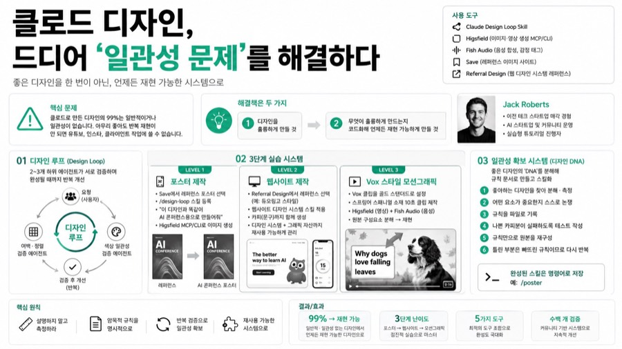
클로드 디자인, 드디어 '일관성 문제'를 해결하다
- Jack Roberts 채널의 실습형 튜토리얼 영상. 진행자가 화면을 공유하며 클로드(Claude)로 디자인을 만들고 이를 재사용…
- Jack(진행자, 이전 테크 스타트업을 매각한 경험이 있으며 현재 AI 스타트업 및 커뮤니티를 운영)
- 클로드로 만든 디자인의 99%는 일반적이거나 일관성이 없다는 '일관성 문제(consistency problem)'를 제기하고, 좋…
- ① 디자인 루프(design loop) 스킬로 좋은 디자인 만들기 ② 완성된 디자인의 'DNA'를 분해해 규칙 문서로 만들고 스킬…
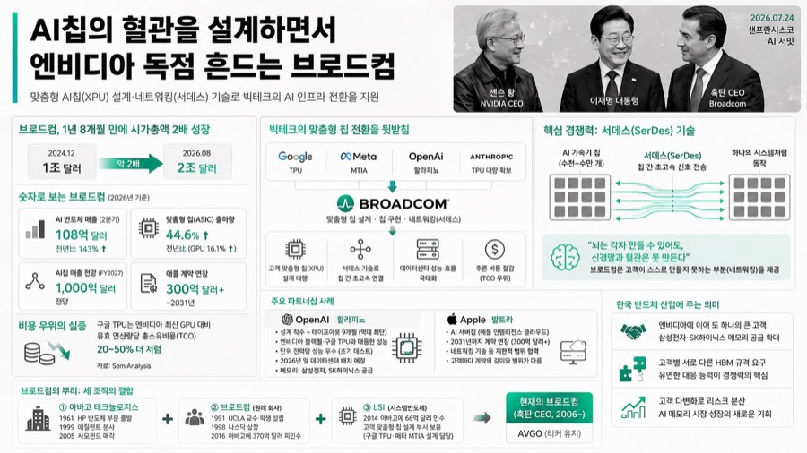
AI칩의 혈관을 설계하면서 엔비디아 독점 흔드는 브로드컴
- 티타임즈TV의 단독 기자 해설 영상. 이사민 기자가 브로드컴의 성장 배경과 전략을 심층 분석한다.
- 이사민 기자(티타임즈TV)
- 2026년 7월 샌프란시스코 AI 서밋에서 이재명 대통령 옆에 엔비디아 젠슨 황 CEO와 나란히 선 브로드컴 혹탄 CEO의 존재감…
- 브로드컴은 구글·메타·오픈AI·앤트로픽 등 빅테크의 맞춤형 AI칩(XPU) 설계와 칩 간 네트워킹(서데스) 기술을 대행하며 시가총…
AI응용10

그록 4.6·그록봇 출시부터 앤트로픽 리만 가설 진전까지, 이번 주 AI 뉴스 총정리
- 그록 4.6이 아티피셜 아날리시스 종합점수에서 GPT-5.6 소울맥스와 동점, GDP벤치마크는 1위 기록
- 270억 파라미터 오픈웨이트 큐엔 3.8이 에이전트 코딩에서 오퍼스 4.6 맥스를 앞서며 소비자 GPU로 무료 구동
- 앤트로픽 연구용 클로드가 리만 가설 영점 비율 하한을 41.6%에서 67.2%까지 끌어올림
- 한국 모티프 모델이 오픈웨이트 국가 순위에서 중국 키미 K3에 이어 글로벌 2위 기록

촉각 글러브로 로봇을 가르친다 — 오픈그래프랩스, 창업 6개월 만에 엔비디아 파트너·매출 10억
- 촉각 글러브·카메라 직접 개발해 로봇 학습용 촉각·1인칭 데이터 수집·판매하는 스타트업
- 창업 6~7개월 만에 엔비디아 아이작 9개 공식 파트너 제품 선정, 이번 분기 매출 약 10억 원
- 여러 카메라 시간축을 맞추는 싱크로 기술이 데이터 품질의 핵심 차별화 요소로 작동
- 한국 여수 산단 숙련공 기술을 데이터화하는 POC 진행, 제조업 기술 전수 문제로 사업 확장

Grok 4.6·Grok Bot부터 앤트로픽 리만 가설 도전까지 — 이번 주 AI 뉴스 총정리
- xAI Grok 4.6, 코딩 벤치마크 1위 기록, 원격 컴퓨터 조작 에이전트 Grok Bot도 출시
- 오픈AI, 컴퓨터 사용 이력 자동기록 기능과 초당 750토큰 울트라패스트 모드 공개
- 앤트로픽 클로드, 리만 가설 영점 비율 하한을 인간 기록 41.6%에서 67.2%로 경신
- 앤트로픽 텍스트 워터마크 도입, 제거 도구 즉시 등장하며 실효성 논쟁과 반발 확산

크롬 익스텐션 + 클로드 데스크탑 앱, 브라우저 자동화를 한 줄 명령으로 끝내는 법
- 1인 유튜브 채널 운영자가 자신의 실제 작업 화면(대본 작성부터 영상 업로드까지)을 그대로 보여주며 설명하는 실전 튜토리얼형 영상.
- 여러 자동화 도구와 자체 프로그램을 시도한 끝에, 결국 "크롬 익스텐션 + 클로드 데스크탑 앱" 조합으로 정착했다고 밝힌다.
- 크롬 익스텐션은 브라우저를 조작하는 '손', 클로드 데스크탑 앱은 그 손을 움직이는 '머리' 역할을 하며, 데스크탑 앱이 꺼져 있…
- ① 로그인된 화면까지 사람처럼 읽어오는 '읽기'(크롤링), ② 클릭·입력·업로드를 직접 수행하는 '조작' 두 가지로 나뉜다.

코딩 몰라도 앱이 나온다, 바이브 코딩 스타터킷으로 세팅 지옥 건너뛰기
- 메이커 에반(Maker Evan) 채널의 8분짜리 제품 소개 영상. 진행자가 자신이 직접 만든 유료 템플릿 '바이브 코딩 스타터킷…
- 바이브 코딩(AI에게 말로 시켜 프로그램을 만드는 방식)에서 진짜 어려운 부분은 코드 작성이 아니라 로그인·데이터 저장·배포 같은…
- 스타터킷은 로그인·데이터 저장·화면까지 이미 동작하는 앱 뼈대, 상황별 레시피(설명서) 9개, 기획·검토·조사를 나눠 맡는 AI…
- 이 구성으로 실제 서비스(스킬샵)가 운영 중이며, 압축 해제부터 클로드 코드 실행까지 보통 10분 안에 프로젝트 준비가 끝난다.

에이전시 없이 뜨는 법, 사내 'AI 담당자'가 되는 3단계 로드맵
- Nate Herk
- 2026년 AI로 돈 버는 방법은 'AI 에이전시 창업'이 아니라 회사 내부에서 대체 불가능한 'AI 담당자(AI person)'…
- PwC 2026 보고서에 따르면 AI 스킬 보유자는 동일 직무 대비 62%의 임금 프리미엄을 받으며, 이는 몇 년 전 25%에서…
- MIT 연구에 따르면 2025년 기업 AI 파일럿 프로젝트의 95%가 측정 가능한 수익을 내지 못했고, 맥킨지 조사에서는 기업의…
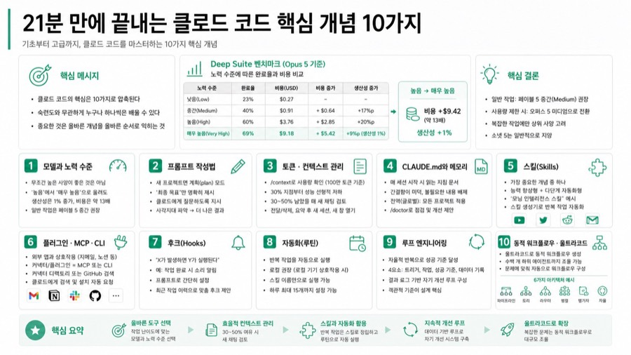
21분 만에 끝내는 클로드 코드 핵심 개념 10가지
- Chase AI 채널의 튜토리얼 영상. 진행자가 클로드 코드(Claude Code)의 핵심 개념 10가지를 기초부터 고급까지 순서…
- Chase(진행자, Chase AI Plus 마스터클래스 운영자)
- 클로드 코드를 마스터하려면 배울 게 너무 많아 보이지만, 실제로 중요한 것은 10가지로 압축된다는 전제 아래, 숙련도와 무관하게…
- ① 모델·노력 수준 ② 프롬프트 작성법(계획 모드) ③ 토큰·컨텍스트 관리 ④ CLAUDE.md와 메모리 ⑤ 스킬 ⑥ 플러그인/M…
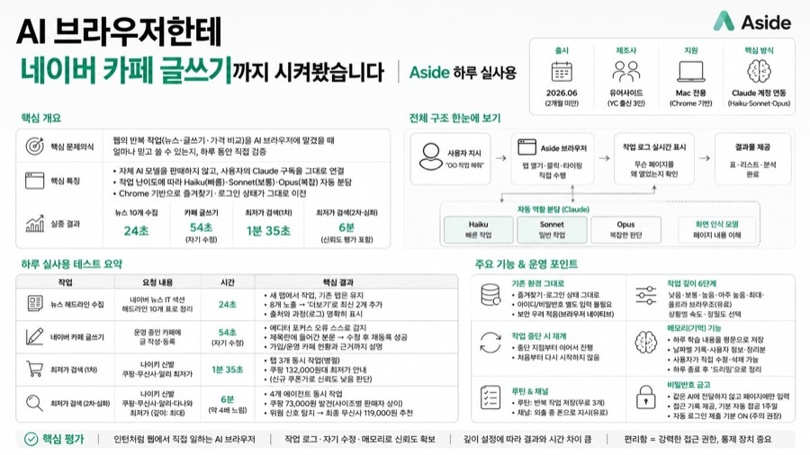
AI 브라우저한테 네이버 카페 글쓰기까지 시켜봤습니다 | Aside 하루 실사용
- 메이커 에반의 실사용 리뷰 영상. AI 브라우저 'Aside'에 세 가지 실제 작업을 시키고 화면을 그대로 보여준다.
- 메이커 에반(유튜버)
- 웹에서 반복되는 단순 작업(뉴스 수집, 글쓰기, 가격 비교)을 AI 브라우저에 맡겼을 때 실제로 얼마나 믿고 쓸 수 있는가를 하루…
- 유어사이드(Your Side), Y콤비네이터 출신 3인 스타트업. 브라우저는 2026년 6월 출시로 아직 2개월이 채 안 된 초기…
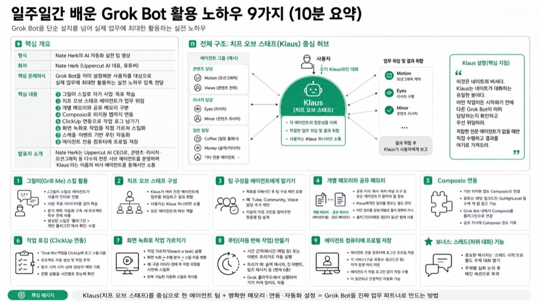
일주일간 배운 Grok Bot 활용 노하우 9가지 (10분 요약)
- Nate Herk의 AI 자동화 실전 팁 영상. 10분 안에 Grok Bot을 활용한 9가지 해킹(노하우)을 시연 화면과 함께 빠…
- Nate Herk(유튜버, Uppercut AI 대표)
- Grok Bot을 이미 설정해본 사용자를 대상으로, 단순 설치를 넘어 실제 업무에 최대한 활용하는 실전 노하우(비전문가도 따라할…
- ① 그릴미(Grill Me) 스킬로 에이전트에게 자기 사업·목표 학습시키기 ② 비서 역할의 '치프 오브 스태프' 에이전트가 여러…
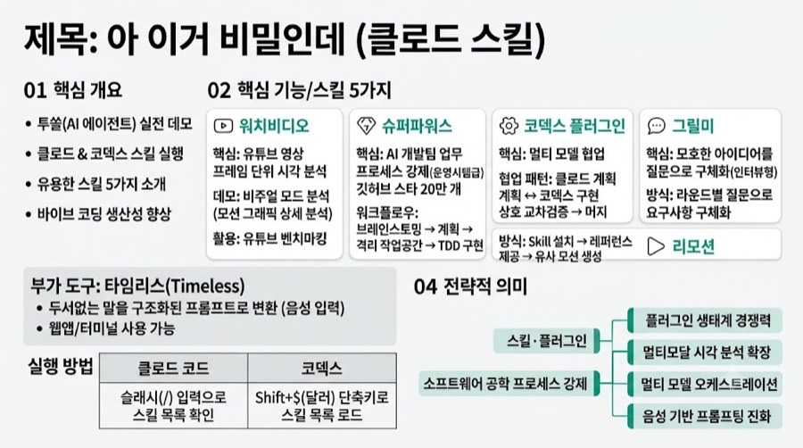
아 이거 비밀인데 (클로드 스킬)
- 투쏠(AI 에이전트) 채널의 실전 데모 영상. 코덱스와 클로드 코드 두 세션을 동시에 띄워놓고 다섯 가지 스킬을 직접 실행해 보여준다.
- 투쏠(유튜버)
- 클로드 코드·코덱스 사용자들이 잘 모르거나 놓치고 있는 유용한 스킬(확장 기능)들을 실사용 데모로 소개하고, 바이브 코딩(AI와…
- ① 워치비디오(유튜브 영상을 프레임 단위로 직접 "보게" 해주는 스킬) ② 슈퍼파워스(브레인스토밍→계획→구현을 체계화하는 운영 시…
AI영상6
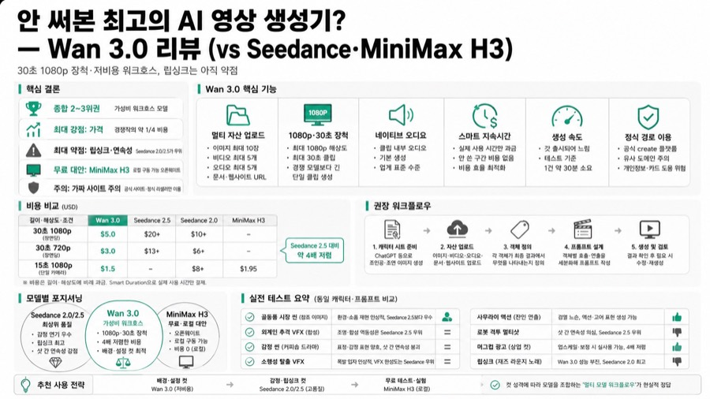
안 써본 최고의 AI 영상 생성기? — Wan 3.0 리뷰 (vs Seedance·MiniMax H3)
- 이미지 10장 영상 5개 오디오 5개에 문서 웹사이트까지 넣는 옴니 모델, 1080p 30초 클립 생성
- 30초 720p 약 3달러로 Seedance 2.5의 13달러 대비 4배 저렴, 최대 강점은 가격 경쟁력
- 감정 연기 립싱크 샷 연속성은 Seedance 2.0·2.5 우위, 배경 디테일 컷엔 Wan 3.0 유용
- 종합 2~3위 워크호스 모델, 완전 무료로는 로컬 구동 MiniMax H3 오픈웨이트가 대안
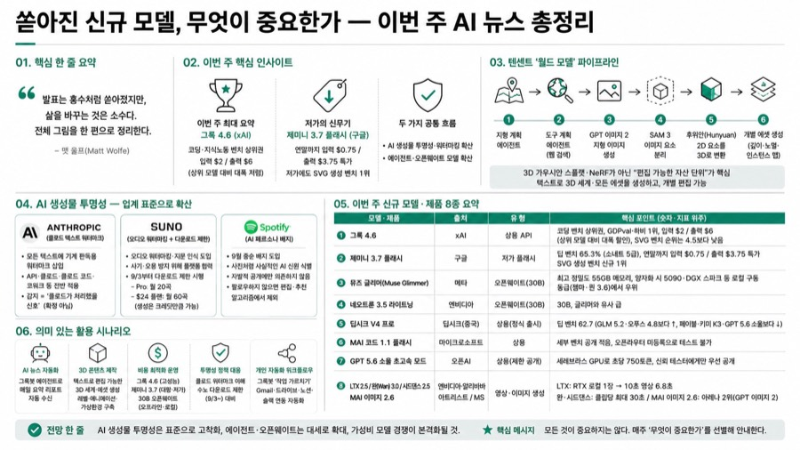
쏟아진 신규 모델, 무엇이 중요한가 — 이번 주 AI 뉴스 총정리
- 이번 주 최대 도약은 그록 4.6, 입력 100만토큰당 2달러 출력 6달러로 상위 코딩모델 대비 대폭 저렴
- 구글 제미니 3.7 플래시는 연말까지 입력 0.75 출력 3.75달러 특가, 저가에도 SVG 생성 벤치 1위 차지
- 앤트로픽 수노 스포티파이가 나란히 AI 표시 도입, 텍스트 워터마크와 9월 다운로드 제한 배지로 대응
- 텐센트 월드모델은 텍스트로 편집가능한 3D 세계 생성, xAI 그록봇은 에이전트별 클라우드PC로 자동화

클로드를 상위 1%처럼 쓰는 법 — 모델 선택부터 코워크·코드까지
- 프로 플랜은 소넷을 기본값으로 어려운 문제만 오퍼스로 전환하라고 화자는 권고
- 이펏 레벨은 미디엄은 일상작업, 하이는 코딩·분석, 익스트라하이는 멀티스텝 에이전틱 작업에 쓰라고 조언
- 커넥터로 Gmail·캘린더·드라이브를 연결하고 스킬로 반복 워크플로를 레시피처럼 저장해두라고 제안
- 코워크는 목표만 던지면 스스로 계획해 수행하는 비서, 코드는 자연어로 앱을 만드는 엔지니어로 구분

정체불명의 신형 AI 영상모델 2종(Polaris·Vega)과 영화 스틸컷 프롬프트 자료 Stills Lab
- Artificial Analysis 벤치마크에 정체불명 텍스트투비디오 모델 Polaris·Vega 익명 등장
- 물리 표현·프롬프트 반영도는 Polaris 우세, 텍스트 렌더링은 Vega가 인상적으로 평가
- 두 모델 중 하나는 메타 신형 영상모델일 가능성 높다고 추정, 공식 확인은 아직 없음
- 영화 스틸컷에 색상·렌즈·카메라 정보를 더한 프롬프트 자료 Stills Lab 함께 소개

LTX 2.5 vs 미니맥스 H3, 무료 AI 영상 생성기 대전과 이번 주 AI 필름 뉴스
- Curious Refuge 채널의 주간 AI 필름 뉴스. 진행자가 신규 AI 영상·3D·이미지 생성 도구를 직접 시연하며 비교 평…
- 오픈웨이트(무료 다운로드·로컬 실행) AI 영상 생성기 LTX 2.5가 출시되어, 기존 최강자였던 Miniax H3와 정면 비교됐다.
- 속도·해상도(4K HDR)는 LTX 2.5가 우세하지만, 물리 법칙 표현·사실감·프롬프트 준수도는 Miniax H3가 전반적으로…
- Meshi 팀이 이미지 한 장을 업로드하면 텍스처까지 자동 적용된 3D 모델을 만들어주는 'Meshi 7'을 출시, 경쟁 도구 대…
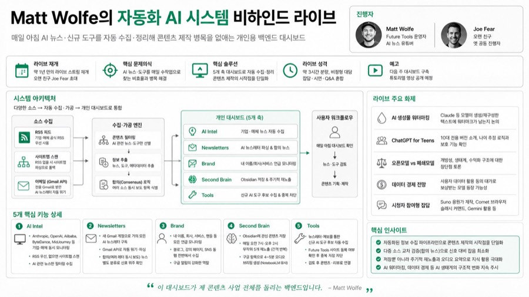
Matt Wolfe의 자동화 AI 시스템 비하인드 라이브
- Future Tools 운영자 Matt Wolfe가 약 1년 만에 재개한 라이브 스트림. 오랜 친구이자 옛 공동 진행자 Joe F…
- 매일 아침 AI 뉴스·신규 도구를 수작업으로 훑는 대신, 여러 소스를 자동 수집·정리해주는 개인용 백엔드 대시보드를 구축해 콘텐츠…
- 대시보드는 AI Intel(RSS/사이트맵 기반 기업 뉴스 수집), Newsletters(전용 Gmail로 받은 모든 AI 뉴스레…
- AI Intel 탭은 Anthropic·OpenAI·Alibaba·ByteDance·MidJourney 등 기업 사이트를 RSS…
XR1

로봇2
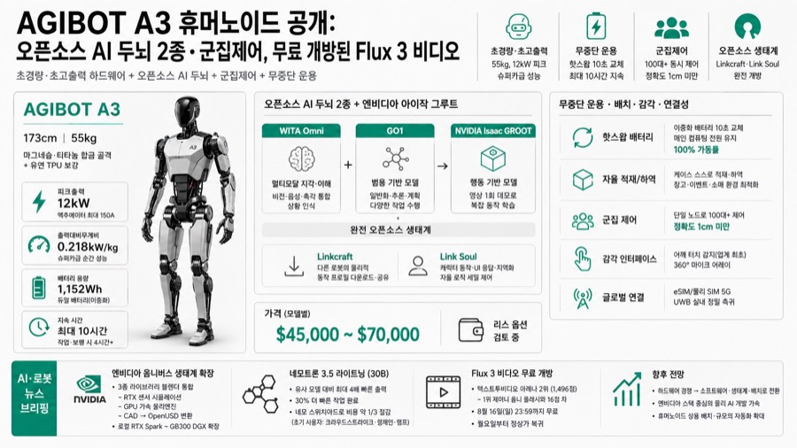
AGIBOT A3 휴머노이드 공개: 오픈소스 AI 두뇌 2종·군집제어, 무료 개방된 Flux 3 비디오
- AGIBOT A3 공개, 173cm 55kg 몸체가 12kW 피크출력, 출력대비무게비 0.218kW/kg로 슈퍼카급 순간성능
- 핫스왑 이중배터리로 전원 안 끄고 10초 교체, 한 번 충전 최대 10시간에 24시간 무중단 가동
- 단일 노드로 100대 이상 로봇을 1cm 미만 정확도 군집제어, 가격은 모델별 4.5만~7만 달러
- 두뇌는 오픈소스 WITA Omni와 GO1에 엔비디아 아이작 그루트 연동, Flux 3 비디오는 8월16일까지 무료
비행·변신 휴머노이드 아크쉘 MX01부터 오카라 AI CMO, 그록봇까지 이번 주 로봇·에이전트 뉴스
- AI News 채널의 로봇공학·AI 에이전트 중심 주간 뉴스 영상. 여러 기업의 신제품·연구 발표를 순서대로 소개한다.
- 아크쉘 로보틱스(Arkshel Robotics)가 세계 최초의 비행 및 형태 변환 휴머노이드 로봇 MX01을 공개, 휴머노이드·사…
- 휴머노이드 로봇 기업 파운데이션(Foundation)이 기존 방식보다 약 100배 빠른 로봇 학습 시스템을 공개, 시뮬레이션·모션…
- 오카라(Okara)가 SEO·SNS·콘텐츠 작성 등 10개 이상의 자율 마케팅 에이전트를 실행하는 AI 에이전트 CMO를 월 99…
기타18
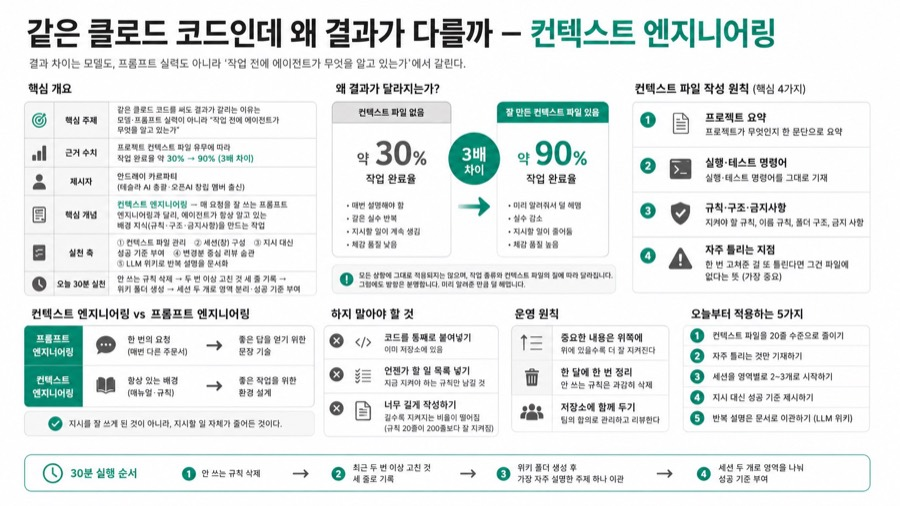
같은 클로드 코드인데 왜 결과가 다를까 — 컨텍스트 엔지니어링
- 컨텍스트 파일 유무로 에이전트 작업 완료율이 30%에서 90%로 3배까지 벌어진다는 연구결과
- 카르파티의 4원칙, 요약 실행명령어 규칙 자주틀리는 지점을 20줄 이내로 짧게 유지
- 세션은 2~3개로 시작해 영역을 나누고, 지시 대신 확인 가능한 성공기준을 부여
- LLM위키로 반복설명을 문서화, 공개 2주만에 깃허브 스타 5천개 돌파해 반향 확인
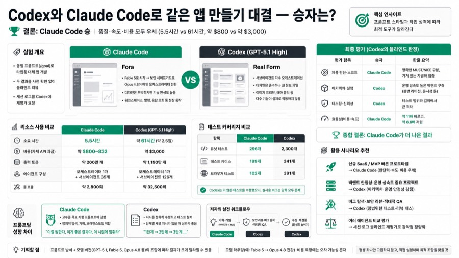
Codex와 Claude Code로 같은 앱 만들기 대결 — 승자는?
- 동일 프롬프트로 앱 빌드 대결, 속도는 클로드코드 5.5시간 대 코덱스 61시간으로 11배 차이
- 비용도 클로드코드 약 800달러 대 코덱스 약 3천달러로 6.6배, 코덱스 자체평가도 클로드코드 승리
- 제품판단과 효율성은 클로드코드가, 테스팅과 아키텍처 안정성은 코덱스가 카테고리별 우세
- 결론은 절대우열 아닌 프롬프트 스타일 차이, 목표지향엔 클로드 단계별지시엔 코덱스가 적합
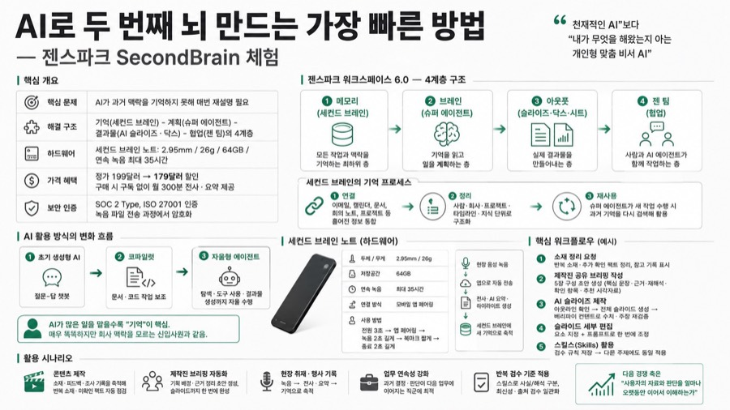
AI로 두 번째 뇌 만드는 가장 빠른 방법 — 젠스파크 SecondBrain 체험
- 젠스파크 워크스페이스6.0을 기억 계획 결과물 협업 4계층으로 재설계, 기억이 다음 경쟁축
- 하드웨어 녹음기 세컨드브레인노트는 두께 2.95mm 연속녹음 35시간, 199달러서 179달러 할인
- 구매시 구독없이 월 300분 전사요약 제공, 플러스프로 플랜은 하루 24시간 무제한 전사 지원
- 콘텐츠 소재 정리와 제작진 브리핑 작성을 세컨드브레인 기억 기반으로 자동화하는 시연 진행
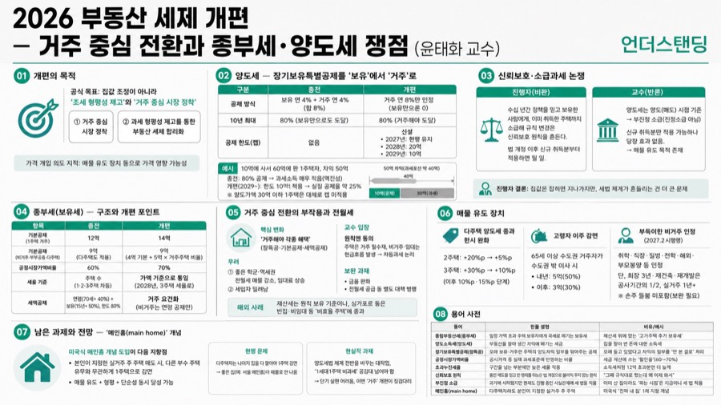
2026 부동산 세제 개편 — 거주 중심 전환과 종부세·양도세 쟁점 (윤태화 교수) — 언더스탠딩
- 장기보유특별공제를 보유서 거주 기준으로 전환, 연 8% 거주공제로 10년 80% 유지하되 2029년 공제한도 10억 신설
- 종부세 기본공제 12억서 14억, 공정시장가액비율 60서 70%로 올려 시가 20억까지 종부세 면제
- 종부세를 주택 수가 아닌 가액 기준으로 2028년 통일, 고가 상위 0.4%만 세부담 강화
- 살지 않을 집이면 팔라는 거주 중심 신호, 다주택 양도세 중과 2주택 5%p 3주택 10%p로 한시 완화

구독 세 개 끊고 API 키 하나로, 이번 달 이미지·영상 제작비 1,800원
- 이미지·영상·업스케일 구독 세 개를 끊고 클로드+리플리케이트 API로 전환, 월 10만원이 1,800원으로
- 이미지 1장 약 200원, 영상 4초 약 400원, 4K 업스케일 400원으로 쓴 만큼만 과금되는 구조
- 클로드에 API키와 작업 매뉴얼(스킬)을 등록해두면 자연어 지시만으로 모델 호출·저장까지 자동 실행

매일 쓰는 유튜브 자동화 스킬 통째로 뜯어보기 — 메이커 에반의 실패 기록
- 대본부터 업로드까지 8단계 유튜브 제작을 클로드 스킬 하나로 자동화, 이 영상도 그 스킬로 제작
- 본문 300줄 미만에 참고문서 4개, 실행파일 5개로 나눠 필요한 시점에만 문서를 읽도록 설계
- 목소리 합성 초당 8.69자, 자막 한 줄 30자 이하, 문단 간 음량차 3데시벨 이내로 규칙화
- 스킬은 완벽한 매뉴얼이 아니라 틀릴 때마다 한 줄씩 규칙을 더하는 흉터라고 화자는 정의

HBM 수요를 갉아먹는 HBF, SK하이닉스는 왜 직접 만드나 — 최태원 인터뷰로 읽는 다음 메모리 전략
- SK하이닉스는 2034년까지 메모리 생산능력 3배 확대에 약 7,200억달러 투자 계획
- 최태원 회장은 CNBC서 AI 에이전트 사용량이 5년 내 77배, 10년 뒤 메모리 수요는 현재의 5배로 전망
- 엔비디아는 HBM 사용량을 줄이는 CMX를, SK하이닉스는 자사 HBM 수요를 깎을 HBF를 동시에 추진
- HBF로 토큰 비용이 낮아지면 AI 사용량이 늘어 전체 메모리 수요는 오히려 커진다는 게 화자의 해석

엔비디아 칩을 막아도 뚫리는 이유 — 김상훈 기자가 짚은 중국 AI의 세 가지 뒷구멍
- 미국의 반도체 수출통제에도 중국 AI가 따라잡는 경로를 밀수·원격접속·증류 세 가지로 화자는 정리
- 에포크AI 추정 중국의 2025년 H100 환산 컴퓨팅파워 약 112만개 중 밀반입분은 중간값 약 66만개
- 엔비디아가 판 GPU 약 2천만개 중 중국의 정식 소유는 약 5%, 미국이 약 80%를 보유
- 젠슨 황은 수출통제가 중국 반도체 자립을 자극한 패착이라 주장, 미 정부는 구멍부터 막아야 한다는 입장

촬영 없이 만드는 동물 쇼츠 — 레플리케이트로 뽑는 59초 영상 실전 공개
- 화면·소리 전부 AI로 생성, 카메라 없이 59초 동물 다큐 쇼츠 제작, 코딩 지식 불필요
- Seedance Pro는 초당 약 2.5원 과금, 컷 14개로 편당 제작비 1,700~2,000원 수준
- 제작 과정을 스킬 문서로 자동화해 편당 제작 시간을 3시간에서 20분으로 단축
- 해상도 낮추고 컷 길이 늘리는 방식으로 비용 절감, 재생성 판단 4대 검수 기준 마련

클로드 비더(claude-video) 완벽 소개 — AI에게 영상을 보여주고 3분 만에 정리하기
- yt-dlp 다운로드, 자막 추출, ffmpeg 장면감지 프레임 추출 3단계로 영상을 멀티모달 분석
- 출시 4개월 만에 깃허브 스타 15,000개·포크 1,500개, 클로드 외 50개 이상 호스트 지원
- 분석 깊이 4단계(트랜스크립트·에피션트·밸런스드·토큰버너)로 속도·비용을 직접 조절
- 구간 지정과 대화형 후속 질의로 코드리뷰·경쟁사 분석·회의록 액션아이템 추출에 활용

테슬라 정체기의 진짜 이유 — 4가지 허들과 머스크 유니버스 (HMG경영연구원 박형근)
- 2분기 매출 최고치에도 ESS 마진 급락으로 현금흐름 마이너스, 테라팹 투자기로 해석
- 텍사스에 짓는 반도체공장 테라팹, 전 세계 생산능력의 약 20배 규모(연 1TW)로 AI칩 자립
- 피지컬 AI 4대 허들(디바이스·데이터·연산·공간) 프레임워크로 테슬라 현황 진단
- 미국은 AI 지능은 앞서나 제조기반 취약, 한국 반도체·배터리·자동차가 결합 기회로 진단

머스크가 숨기는 로봇의 진짜 병목 — 부품 생태계와 타임라인의 현실
- 언더스탠딩 채널의 대담 영상(2부). HMG경영연구원 박형근 실장이 테슬라 연구자이자 자동차산업 전문가로 출연해 피지컬 AI(자율…
- 자율주행과 휴머노이드 로봇 모두 기술 자체보다 규제·사회적 수용성·부품 공급망이라는 비기술적 장벽이 상용화 시점을 결정한다는 것이…
- 국내는 2027년 9월부터 UNECE 국제규정에 따른 레벨2+(디카스2) 규제가 도입될 전망이며, 규제 통과 후에도 소비자 신뢰…
- 휴머노이드 로봇 양산의 최대 병목은 기술이 아니라 고정밀 부품(하모닉 감속기, 소형 고출력 구동기 등) 공급망이며, 이 영역은 중…

일조권 규제 풀고 대출 늘리고, 정부의 '10평 더' 빌라 공급대책 효과는
- 언더스탠딩 채널의 시사 대담. 장순원 기자가 정부의 비아파트(빌라·다가구·오피스�텔) 공급 대책을 슬라이드로 설명하고 진행자와 문…
- 서울 주택의 약 절반이 비아파트(빌라·다가구·오피스텔)인데, 비아파트 신축 착공 물량이 10년 평균(약 5만 6천 호) 대비 25…
- 2022~2023년 금리 급등과 전세사기(빌라왕) 사태로 세입자들이 빌라를 기피하면서, 사업자가 공사비를 회수하지 못해 신축을 포…
- 2030년까지 수도권에서 비아파트 약 13만 가구 착공을 목표로 제시했다.

배우 하영 증조부 친일 논란이 되살린 16년 만의 친일재산 환수 조사위
- 배우 하영 씨의 증조부 안상호가 1909년 이토 히로부미 추도 모임, 1916년 대정친목회 평의원 명단에 이름이 올라 있던 사실이…
- 안상호는 친일인명사전 등재 인물도, 친일반민족행위진상규명위원회의 확정 명단(1,006명 상당)에도 포함되지 않아 현행법상 재산 환…
- 2006~2010년 활동한 친일재산조사위원회는 4년간 친일파 후손 소유 토지 2,359필지를 국가에 귀속시켰다.
- 2010년 위원회 해산 후 16년간 새 친일재산을 찾는 공식 기구가 없어, 후손들이 부동산 매각·명의 분산으로 환수를 피해왔다…
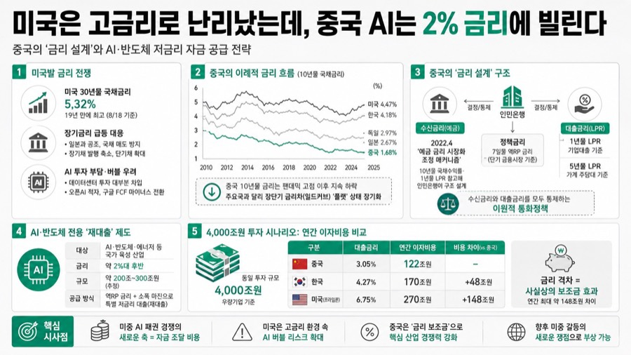
미국은 고금리로 난리났는데, 중국 AI는 2% 금리에 빌린다
- '세상의 모든 지식 언더스탠딩'의 대담 코너. 진행자와 김상훈 기자가 중국의 금리 정책을 주제로 문답을 이어간다.
- 진행자, 김상훈 기자(언더스탠딩)
- 미국은 30년물 국채금리가 19년 만에 최고(5.32%)로 치솟아 AI 투자 비용 부담과 버블 우려가 커지는 반면, 중국은 같은…
- 중국은 2022년 도입한 '예금 금리 시장화 조정 메커니즘'으로 수신 금리(예금 금리)와 대출 금리(LPR)를 모두 사실상 정부가…
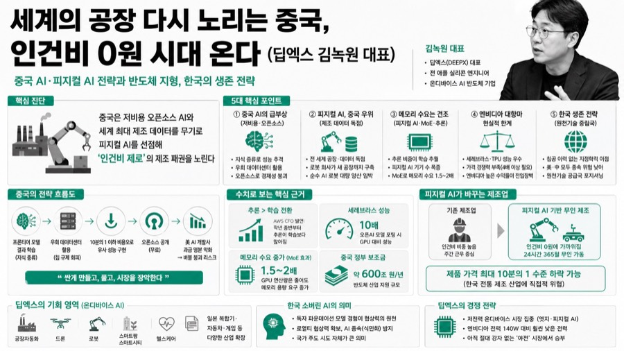
세계의 공장 다시 노리는 중국, 인건비 0원 시대 온다 (딥엑스 김녹원 대표)
- 언더스탠딩 채널의 대담 코너. 온디바이스 AI 반도체 기업 딥엑스(DEEPX)의 김녹원 대표(전 애플 반도체 엔지니어)가 진행자와…
- 김녹원(딥엑스 대표, 전 애플 실리콘 엔지니어), 언더스탠딩 진행자
- 중국이 키미 K2, 딥시크 등 저비용 오픈소스 모델로 미국 AI 개발사들의 "비용 정당성"을 무력화시키는 동시에, 세계 최대 제조…
- ① 중국의 지식 증류·오픈소스 전략과 AI 버블 붕괴 리스크 ② 피지컬 AI에서 중국이 미국보다 앞서는 이유(제조 데이터 독점)…
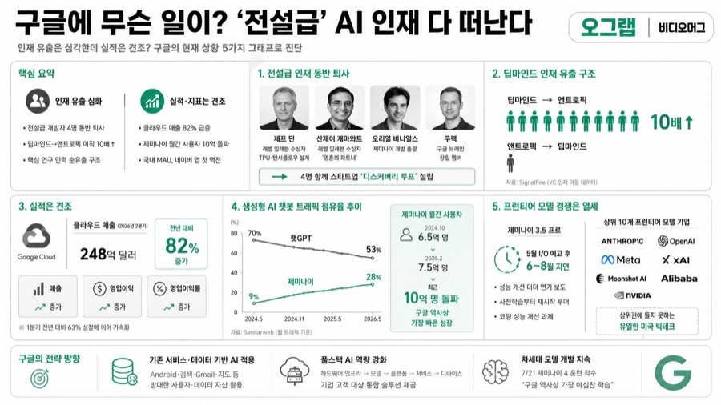
구글에 무슨 일이? '전설급' AI 인재 다 떠난다 / 오그랲 / 비디오머그
- 비디오머그의 데이터 분석 코너 '오그랩'. 아네 기자가 5개 그래프를 통해 구글의 현재 상황을 진단한다.
- 아네 기자(비디오머그)
- 구글의 전설적 개발자들이 줄줄이 퇴사하고 프런티어 모델 경쟁에서 밀리고 있다는 우려가 커지는 가운데, 실제 실적·트래픽 지표는 나…
- 제프딘·데미스 허사비스 등 핵심 인재 유출, 딥마인드→앤트로픽 인재 이동이 10배 많은 추세, 반면 구글 클라우드 매출 82% 급…
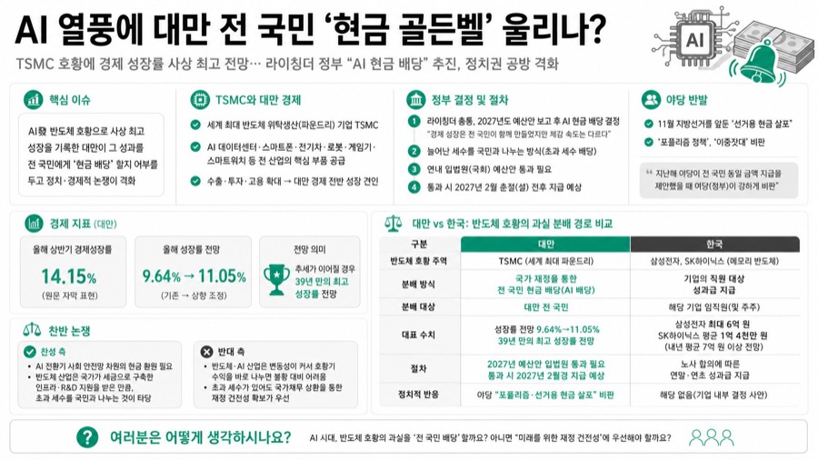
AI 열풍에 대만 전 국민 '현금 골든벨' 울리나?
- 비디오머그 '머그인사이트' 코너의 짧은 시사 브리핑 영상(약 4분)
- 내레이션 중심의 뉴스 브리핑(별도 출연자 없음)
- 세계 최대 반도체 위탁생산기업 TSMC를 보유한 대만이 AI發 반도체 호황으로 사상 최고 수준의 경제 성장을 기록하자, 그 성과를…
- 라이칭더 총통이 2027년도 예산에서 전 국민 AI 현금 보너스 지급을 선포했으나, 야당은 11월 지방선거를 겨냥한 포퓰리즘이라…
Daybreak · Youtube Brief · 2026. 08. 20. (목)